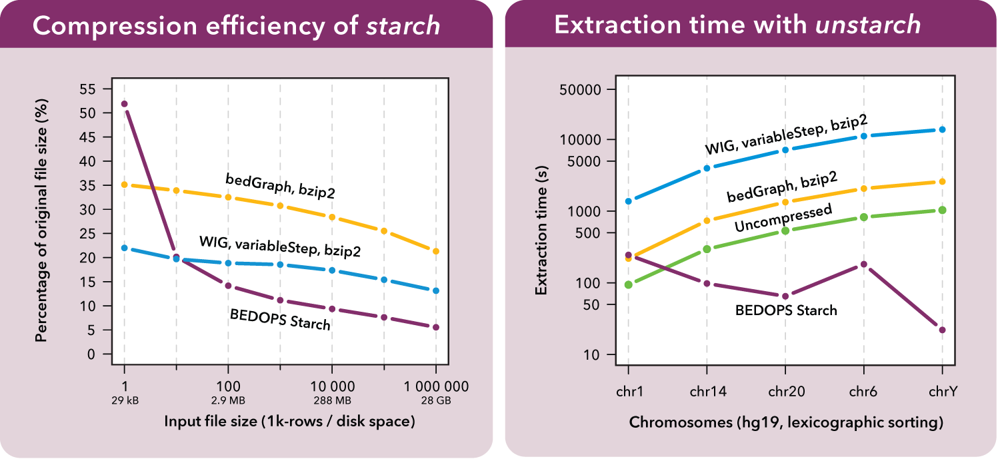

1. Overview¶
1.1. About BEDOPS¶
BEDOPS is an open-source command-line toolkit that performs highly efficient and scalable Boolean and other set operations, statistical calculations, archiving, conversion and other management of genomic data of arbitrary scale.
The suite includes tools for set and statistical operations (bedops, bedmap and closest-features) and compression of large inputs into a novel lossless format (starch) that can provide greater space savings and faster data extractions than current alternatives. BEDOPS offers native support for this deep compression format, in addition to BED.
BEDOPS also offers logarithmic time search to per-chromosome regions in sorted BED data (in bedextract and core BEDOPS tools). This feature makes whole-genome analyses “embarassingly parallel”, in that per-chromosome computations can be distributed onto separate work nodes, with results collated at the end in map-reduce fashion.
Sorting arbitrarily large BED files is easy with sort-bed, which easily scales beyond available system memory, as needed. We also offer portable conversion scripts that transform data in common genomic formats (SAM/BAM, GFF/GTF, PSL, WIG, and VCF) to sorted BED data that are ready to use with core BEDOPS utilities.
All of these tools are made to be glued together with common UNIX input and output streams. This helps make your pipeline design and maintenance easy, fast and flexible.
1.2. Why you should use BEDOPS¶
1.2.1. BEDOPS tools are flexible¶
Our tools fit easily into analysis pipelines, allow practically unlimited inputs, and reduce I/O overhead through standard UNIX input and output streams:
$ bedops --intersect A.bed B.bed C.bed \
| bedmap --echo --mean - D.bed \
| ... \
> Answer.bed
Our bedops core tool offers numerous set operations of all kinds, including those in the slide below:

The bedmap core tool applies a wide variety of statistical and mapping operations to genomic inputs:

These and other tools send their results to the output stream, ready for consumption by processes downstream along your pipeline.
1.2.2. BEDOPS tools are fast and efficient¶
BEDOPS tools take advantage of the information in a sorted BED file to use only what data are needed to perform the analysis. Our tools are agnostic about genomes: Run BEDOPS tools on genomes as small as Circovirus or as large as Polychaos dubium!
Independent tests comparing various kits show that BEDOPS offers the fastest operations with the lowest memory overhead:

BEDOPS also introduces a novel and lossless compression format called Starch that reduces whole-genome BED datasets to ~5% of their original size (and BAM datasets to roughly 35% of their original size), while adding useful metadata and random access, allowing instantaneous retrieval of any compressed chromosome:
{kind=link}
1.2.3. BEDOPS tools make your work embarrassingly easy to parallelize¶
BEDOPS tools introduce the --chrom option to efficiently locate a specified chromosome within a sorted BED file, useful for “embarrassingly parallel” whole-genome analyses, where work can be logically divided by units of chromosome in a “map-reduce” fashion.
1.2.4. BEDOPS tools are open, documented and supported¶
BEDOPS is available as GPL-licensed source code and precompiled binaries for Linux and Mac OS X. We offer support through online forums such as our own and Biostars and recipes showing BEDOPS tools in use for answering common research questions.